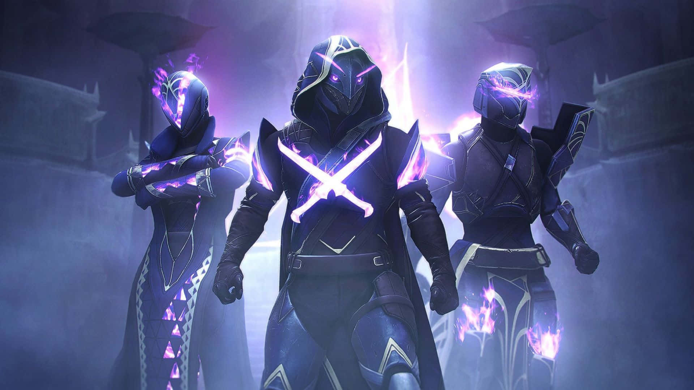

Cyberpunk77
Un videojuego perteneciente al género rol de acción y disparos en primera persona desarrollado y publicado por CD Projekt.

Battlefield V
Un videojuego de disparos y acción bélica en primera persona desarrollado por EA Digital Illusions CE y distribuido por Electronic Arts.

Destiny 2
Un videojuego de disparos en primera persona, desarrollado y publicado por Bungie.